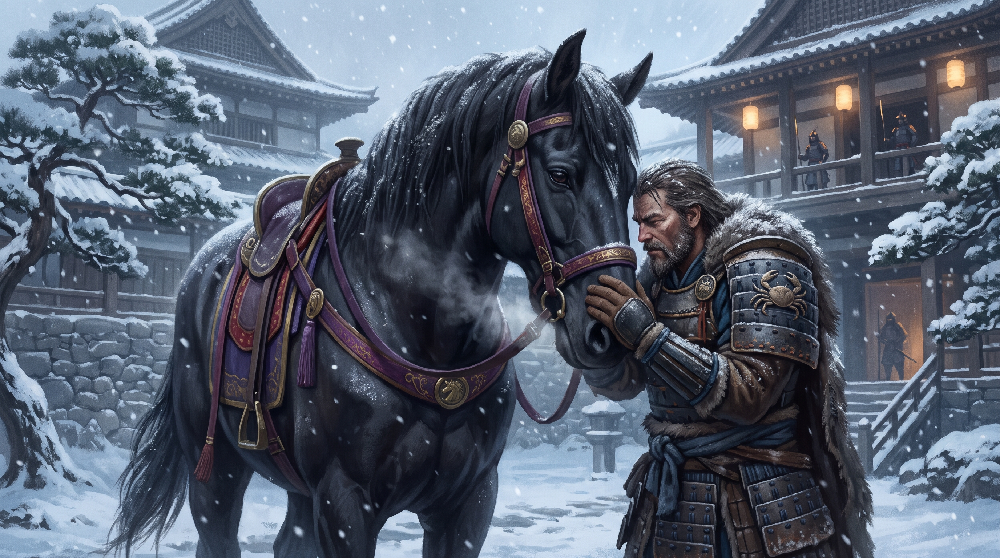
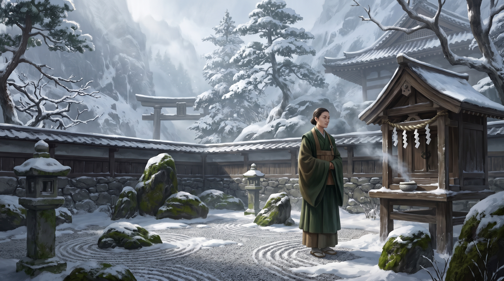
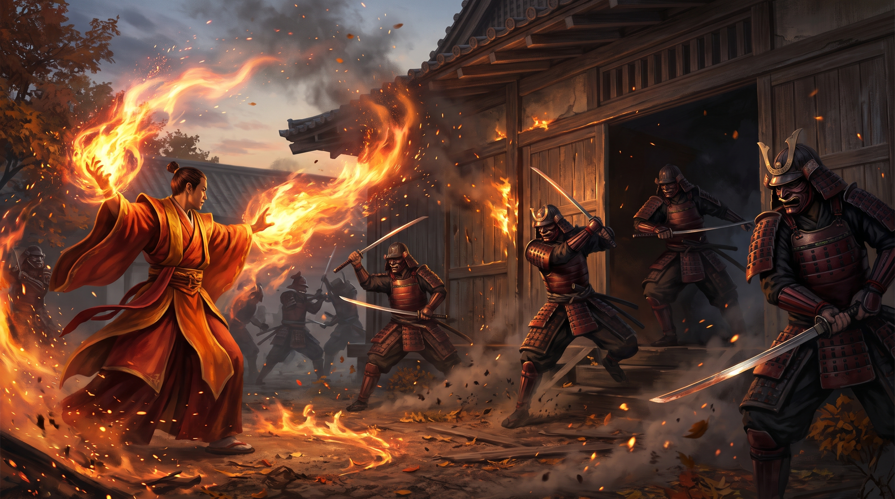

Chronique active : Ryûmitaka Isawa (Trafic à Shinjo Kyuden)
Vitesse :
🔥 Trafic à Shinjo Kyuden, une aventure épique et hippique
Par Ryûmitaka Isawa • Publié le 29 novembre 2015
Une fois de plus la Grue championne des travaux finis Doji Satsume, nous confie une mission des plus importantes (tellement importante qu'on la confie à des Jeunes Samouraïs!).

La rencontre avec Xian — Okado gagne la confiance du légendaire destrier de Shinjo Shimura.
Je n'écoutais que d'une oreille, mais j'ai compris qu'il s'agissait de parvenir à apprivoiser un cheval du nom de Xian. Ce nom m'a tout de suite interpellé, il y a très peu de monture aussi fidèle et renommée dans toutes l'histoire de Rokugan.
Okado Iruma qui « sait y faire avec les bêtes », compris alors que le cheval nous entraînerait sur la piste de son maître disparu, Shimura Shinjo, afin de parachever sa quête.
Nous avons croisé de nouveau Megumi, la fortune de la conduite heroïque, qui nous mit en garde sur un choix futur auquel on devra faire face : suivre la loi des hommes ou suivre son cœur.
Le long périple de sire canasson nous mena à Kyuden Shinjo, ville des terres de la Licorne. Rapidement nous obtenons des renseignement du Karro (chef de la sécurité), ainsi que des admirateurs de Shimura-sama ; ce dernier aurait entrepris de démanteler une organisation secrète, spécialisée dans la vente d'objets illégalement acquis dans les terres brûlées.
Notre enquête nous amena donc à soupçonner les marchands de la ville, en particulier le plus prospère d'entre eux Ide Yujo. Dans notre recherche d'informations un voleur nous subtilisa l'or en notre possession, et voyant que l'entraînement des bushis ne suffisait pas à rattraper un va-nu-pied, je pris sur moi donc, de rattraper ce malandrin. Plutôt que de l'éliminer séance tenante, on décide de se servir de lui pour s'offrir un accès au réseau de contrebande.
Finalement en contact avec un marchand de l'organisation, nous ne parvenons pas à lui soutirer davantage d'informations sur la taille, les membres de leur groupe. C'est alors que nous repérons qu'une personne suspecte nous suit. Okado-san parvint à rattraper cet individu qui se révéla être une eta du nom de Ikko. En revanche bien qu'issu de faible naissance, chacun d'entre nous, ressentit à quel point cet être dégageait de la bienveillance.

Le sanctuaire secret — La retraite zen d'Ikko dans les montagnes sauvages de la Licorne.
Son état de plénitude et d'éveil, eu la fâcheuse conséquence de la faire exclure des siens, mais nous avons réussi à la retrouver dans les montagnes, où elle s'était retiré, et où elle avait établi un jardin zen, dont la perfection n'avait d'égal que sa propre beauté.
Après une discussion avec l'être parfait, nous comprîmes que l'heure du choix de Megumi était venu. Épargner ou non cette eta qui n'avait pas porté secours à Shimura-sama quand elle le pouvait, et qui avait gardé le secret sur sa mort ainsi que sur le repère de l'organisation secrète.
Bien que les charges contre elle soient lourdes, il nous était impossible de rester indifférents face au dévouement dont elle avait fait preuve envers la sépulture du samouraï défunt. Elle avait par ailleurs reçu une bénédiction des dieux, cela ne faisait aucun doute. Enfin mes enseignements prenait un sens, les paroles vides de mes senseï se sont remplis d'une couleur bien vive et réelle.
Finalement nous décidions de nous rendre au repaire caché, dont Ikko connaissait l'emplacement afin de mettre un terme aux trafics. Après une rude escarmouche, qui allait se transformer en véritable bataille, un groupe de Samouraïs du clan du scorpion nous vint en aide et tua les derniers scélérats.

L'assaut de l'entrepôt — Les boules de feu et l'irruption des Scorpions contre le réseau du Kolat.
Parmi les objets volés, il y avait un coffre très solide que Samui ouvra d'une « douce caresse », comme savent si bien le faire les Bushis Ida . Ce coffre contenait des documents inquiétants qui apparemment justifiaient à eux seuls la présence des Scorpions. Il était très dangereux pour nous de chercher à les garder…
Cette aventure pris fin par l'ascension sociale de Ikko, qui nous semblait juste et méritée, ainsi que le départ de Xian pour rejoindre son maître aux côtés des Kamis.
PS : il est aussi à noter que nous avons relancé toute l'économie de la cité par l'achat de colliers et de flèches…
🏹 Version 2 : Par Tsuruchi Akira
Chronique détaillée de la traque de Xian et du Kolat
Cela faisait 3 mois que j'étais rentré à mon dojo. Le récit de mes aventures m'avait précédé et j'avais été félicité par le maître en personne. Il avait entrepris de me former personnellement et je sentais que je progressais de jour en jour. Un matin un messager officiel de Doji Satsume vint m'apporter ce court message : “Akira Tsuruchi, vous êtes sommés de venir dans les plus brefs délais à Shiro Agasha”. La fin de cette parenthèse enchanteresse prit fin brutalement.
Cela fait maintenant 2 jours que je suis parti de mon dojo à cheval en direction de la capitale. J'ai la tête pleine de questions qui restent sans réponses et je sens le froid engourdir mes mains crisper sur les rênes. L'hiver s'installe et les routes vont devenir impraticables…
Je me présente aux portes du palais du champion d'émeraude et je suis accueilli par Sutokhu qui me montre mes quartiers. Nous devons encore attendre Okado et Samui qui sont les plus éloignés. En attendant, nous sommes tous consignés dans nos quartiers. Je passe ainsi deux jours à lire les livres de la bibliothèque de ma chambre et à entretenir mon arc. En l'observant, je suis persuadé que je pourrai l'améliorer mais je ne parviens pas encore à trouver une idée intéressante.
C'est dans la matinée du troisième jour que nous sommes autorisés à sortir de nos chambres pour rencontrer Doji Satsume et connaître la raison de notre présence. Nous nous présentons en rang et saluons comme il se doit (dogeza) le champion d'émeraude. Il nous apprend qu'il a une mission peu commune pour nous. Xian, le cheval de Shinjo Shimura, est rentré à la capitale sans son maître. Il semble attendre quelqu'un dans la cour du château mais toutes les personnes qui ont essayé de l'approcher se sont fait blessées par un coup de sabot ou de dents. L'absence de Shinjo Shimura ne présageant rien de bon, nous devons comprendre ce que veut l'animal et retrouver son maître (ou le venger si quelque chose lui était arrivé). Avant de partir, on nous apprend que Shinjo Shimura cherchait à mettre fin à une organisation spécialisée dans le recel d'objets venant du nord-ouest de l'empire.
La quête du destrier — L'approche de Xian dans la cour enneigée de la capitale.
En allant voir le cheval, je fis un point sur mes connaissances de Shinjo Shimura. C'était un samouraï légendaire du clan de la licorne qui avait combattu des années durant avec Doji Satsume mais il était de notoriété publique qu'il avait pris sa retraite il y a quelques années dans un coin reclus de l'empire d'émeraude.
Nous sortons dans la cour, la neige tombe à gros flocon et le sol est recouvert d'une pellicule blanche. Pourtant nous voyons Xian dehors, visiblement nerveux faisant des allers-retours entre la porte des écuries et l'entrée principale. Okado s'approche de l'énorme cheval paume vers le bas en gardant le contact avec le regard de l'animal. Le cheval s'arrête à quelques pas de lui, tapant le sol de ses sabots de manière saccadé et renâclant fort. Okado continue de se rapprocher doucement de l'animal jusqu'à ce que ce dernier puisse sentir la paume de sa main. Puis le samurai se penche à l'oreille du cheval et lui murmure quelques mots. Le cheval lui agrippe alors la manche et l'attire vers la sortie du palais. Nous nous précipitons vers l'écurie pour prendre nos chevaux afin de les suivre.
Nous quittons donc la capitale, guidé par Xian qui nous fait emprunter des petits sentiers de campagne. Nous poursuivons notre route pendant 6 jours dans le froid en direction de l'ouest. Les rations prises rapidement lors de notre départ commencent à s'épuiser et nous n'avons rencontré personnes.
Une nuit, Ryumitaka, Okado et moi-même sommes réveillés par des bruits à l'extérieur de l'abri que nous avions trouvé pour passer la nuit. Arme à la main nous sortons tous les trois. A quelques dizaines de mètres de nous, 4 ours émergent du bois et commencent à nous charger. Je tir une première flèche qui se plante dans l'épaule d'un des ours. Quasiment simultanément, le Shugenja envoie une boule de feu sur un autre ours qui s'enflamme. Désorienté et terrorisé, la meute repart dans la forêt en poussant des rugissements féroces. Au petit matin, l'histoire amusa beaucoup nos deux compagnons dont le tumulte ne les avait pas dérangés le moins du monde.
Nous arrivons à Tambo affamé après deux jours de diètes. La périphérie de la ville est à moitié dévasté, des bâtiments sont en ruines et il n'y pratiquement personnes dans la rue. Seuls quelques Heimins fouillent les décombres des maisons. Nous nous dirigeons vers la demeure du chef local pour l'informer de notre présence et avoir des informations sur les causes de ce désastre. En nous rapprochant du centre, la population et les habitations se densifient. Arrivé à la demeure du seigneur local, les gardes nous introduisent auprès de leur maitre Bato-sama. Nous échangeons quelques banalités et il nous explique que la ville est en reconstruction à cause des guerres. Nous mangeons et dormons en ville avant de reprendre la route le lendemain matin et avec le plein de provisions.
A une journée de cheval des terres de la licorne environ, Xian s'arrête près d'une cabane. De la fumée sort de la cheminé et à notre approche, une voix de vieil homme nous invite à entrer. Alors que nous pénétrons à tour de rôle dans la petite maisonnée, je reconnais Megumi-sama assis en tailleur. Ce dernier nous invite à partager le thé avec lui, tout est prêt comme si ce dernier s'attendait à nous recevoir. Après quelques échanges courtois et enjoués, Megumi prend une voix plus sérieuse. Il nous prophétie que des choix difficiles nous attendent mais qu'il a confiance en notre groupe. Puis il termine la conversation par cet énigmatique psaume : “ Pourvu que le cœur soit sincère les dieux protégeront sans qu'on ait à les prier ”.
C'est le matin, nous émergeons tous en même temps de ce qui semble n'avoir été qu'un songe mais nous ne sommes pas dupes. Megumi nous a encore joué un sacré tour.
Nous reprenons la route toujours guider par Xian et nous arrivons sur le territoire du clan de la licorne. De grandes plaines enneigés s'étende devant nous et nous poursuivons notre route pour arriver à Shiro Utaku Shojo.
Nous ne voyons quasiment que des femmes et c'est Rika Otaku qui nous accueil en tant que chef de cette ville. L'entretien est bref et pas des plus agréable. Rika Otaku nous fait comprendre que nous ne sommes pas les bienvenus et que nous devons reprendre la route. De retour aux chevaux, un attroupement s'est formé autour de Xian qui semble étrangement heureux de ce bain de foule lui qui, 2 semaines auparavant, ne se laissait pas approcher.
Un homme nous explique que cela fait deux ans que Xian n'était pas revenu. Visiblement ému, il nous invite dans son auberge pour nous raconter son histoire. Pendant que nous mangeons, il ne se lasse pas de raconter des récits sur Shinjo Shimura et de son majestueux destrier Xian. Ce binôme était adulé de tous sur ces terres. Nous remercions notre hôte et reprenons la route jusqu'à Shiro Kanashimi no Komichi dernière ville à la frontière entre Rokugan et le territoire Gaijin « Les Sables Ardents ». Les chemins pour accéder à cette ville dans les montagnes sont escarpés. Nous arrivons fourbu dans cette forteresse densément peuplée.
Nous allons directement chez le Karo de la ville pour lui présenter nos hommages. Alors que nous entrons dans sa maison, je vois Xian s'allonger devant la bâtisse comme soulagé et serin d'être enfin arrivé à destination. Cette fois-ci, le Karo nous accueille avec joie, nous fait servir une collation et nous interroge sur la raison de notre venu. Nous répondons sans détour et une fois l'entrevue achevé nous sortons de sa maison.
Trois samurais Licorne nous attendent à la porte. Au centre, un magistrat nous fait savoir que le Daimyo de la ville nous invite au palais ce soir pour s'entretenir avec nous. Le message délivré, le magistrat et son escorte, un grand samurai avec une épée bâtarde et une femme Otaku, se retire vers les hauteurs de la ville.
En attendant le soir, nous partons explorer le marché pour essayer de trouver des objets intéressants. Je constate que Samui se fait encore plumer en achetant des babioles dix fois leur prix. Pour ma part, je refais un stock de flèche (un peu moins d'une centaine) afin d'être sûre de ne pas en manquer. Je les fais livrer à notre auberge.
A la nuit tombée, nous nous rendons chez le daimyo. Nous sommes les seuls samurais de la réception mais nous réussissons à rester discret et à échanger avec le maitre des lieux sur notre mission. Il nous demande de reprendre l'enquête de Shinjo Shimura pour retrouver les coupables. Ide Fusaaki (le Karo) se tient à notre disposition. De retour à l'auberge, nous sombrons tous dans un profond sommeil jusqu'au matin.
Okado et moi allons interroger les samurais licorne du palais du Daimyo mais personne ne semble avoir d'informations intéressantes et nous rentrons à l'auberge bredouille. Les autres ont eu plus de chance, en fouillant les fontes de Xian, qui se laisse maintenant docilement approcher, ils ont trouvé le tsuba du katana de Shinjo Shimura. Ce dernier a surement été cassé lors d'un combat.
En début d'après-midi, nous nous rendons chez Ide Fusaaki pour essayer d'en savoir plus sur le commerce dans la région. Il nous apprend qu'il y a un marché noir sur les objets des terres brulées et nous donne une liste des marchands qu'ils ont déjà repéré.
Nous décidons de leur tendre un piège. Je passe mon après-midi dans tous les commerces exotiques en ouvrant volontiers ma bourse en grand à chaque fois pour attirer l'attention sur moi. J'achète plein de petits objets mais surtout je fais courir le bruit que je recherche des objets d'art rares et venant de l'étranger pour mon maitre. Au détour d'un étal, je sens qu'on me bouscule et d'instinct je remarque que l'on me prend ma bourse. Je me relève et part aussitôt à la poursuite du fuyard. Ryu qui me filait de près, me dépasse et arrive après une longue course poursuite à le rattraper et le maitriser. Nous récupérons la bourse et nous lui proposons un marché. Il peut soit mourir pour ses idées soit gagner deux kokus en échanges de quelques réponses. Son choix est rapidement fait.
La retraite spirituelle — Visite du jardin zen d'Ikko dans les hauteurs enneigées.
A notre arrivé, le chef du village répondant au nom de « Osso » nous accueille. A la description de la êta, Osso crache sur le sol. « Nous avons chassé Ikko ! C'est une mauvaise fille, une mythomane et une voleuse ! Elle vit seule à la sortie du village désormais ». Nous suivons les indications du vieil homme et nous arrivons à la cabane de Ikko dans laquelle elle nous invite à rentrer.
Sa voix est douce et agréable et nous nous asseyons pour écouter son histoire. Elle nous apprend qu'elle connaissait Shinjo Shimura. Qu'elle savait qu'il avait découvert un entrepôt non loin de là il y a quelques années. Malheureusement des brigands l'ont surpris en train d'enquêter et l'ont tué dans un combat sanglant. En sanglot, elle nous expliqua n'avoir rien pu faire pour le protéger mais qu'elle avait trouvé le courage de ramasser ses armes et d'enterrer son corps sans sépulture mais pour éviter que les animaux ne se charge de faire disparaitre le corps. Après son récit glaçant, nous partons pour l'entrepôt finir le travail commencé par Shinjo Shimura.
Nous trouvons et pénétrons sans mal dans la bâtisse décrit par Ikko. Nous y découvrons une montagne d'objets illicites et notre attention se porte plus particulièrement sur un coffre dans une petite pièce adjacente à la zone de stockage principale. J'essaie de crocheter la serrure mais celle-ci résiste ce qui agace Samui qui me prend le coffre des mains, le pose sur le sol, et lui assène un grand coup de tetsubo mais qui n'a que peu d'effet. Attiré par le bruit, un garde arrive dans notre direction. Je l'abats d'une flèche mais il arrive à donner l'alerte avant de s'effondrer. Samui redonne un coup de tetsubo encore plus fort sur le coffre qui cède sous l'impact. Celui-ci contenait plusieurs papiers administratifs. Nous les ramassons en hâte et avant l'arrivée de nos ennemies.
L'affrontement final — Magie de feu et intervention des Scorpions à l'entrepôt du Kolat.
Une bataille spectaculaire commence alors. Je vois des boules de feux voler et enflammer des samurais adverses. Okado découpe littéralement en deux tous ceux qui se présentent devant lui tandis que Samui fracasse crânes et côtes avec son tetsubo. Je couvre mes compagnons en tirant sur les samurais qui arrivent au loin. Sans les avoir vu arrivé, des samurais du clan du scorpion arrive dans notre dos mais, heureusement, nous soutienne dans notre combat.
Une fois la bataille terminée, le chef de leur détachement Bayushi Yojiro nous demande de leur remettre l'ensemble des documents du coffre. C'est avec étonnement que je reconnais le samurai qui s'avance pour les récupérer. C'est Bayushi Sugai que nous croisé lors de notre Gempukku. Une fois les documents remis, Bayushi Yojiro nous donne quelques informations pour que nous puissions nous aussi faire un rapport. « Tout ceci est l'œuvre du Kolat, une organisation secrète diriger par Ide Yuga un marchand. ».
Nous quittons l'entrepôt pour retourner faire notre rapport au daimyo de Shiro Kanashimi no Komichi. Nous demandons à Ikko de nous accompagner pour la faire sacraliser car c'est elle qui a permis la résolution de cette affaire et par la même occasion de venger Shinjo Shimura le héros de tout un clan.